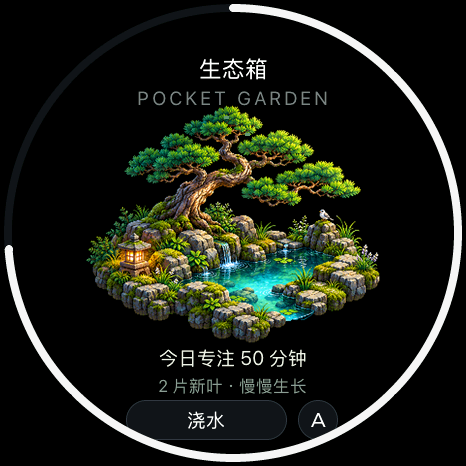
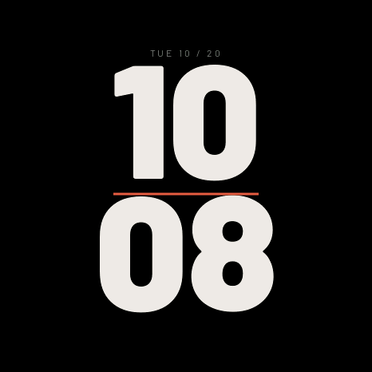
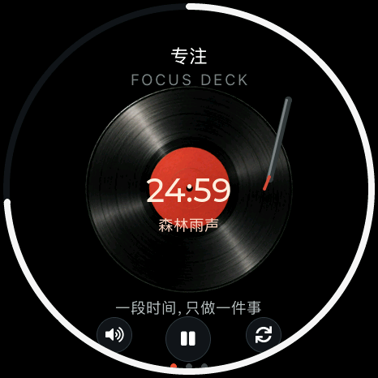

<!doctype html><html lang="zh-CN"><meta charset="utf-8"><meta name="viewport" content="width=1080"><title>封面</title><link rel="stylesheet" href="style.css">
    <main class="poster cover" data-number="1"><header><div class="brand">soRound OS <span>明天 · 正式版见</span></div><div class="kicker">10.07 — 10.22 / 这半个月的小变化</div><h1>小圆屏，<br>又有新花样了。</h1><p class="sub">新表盘、小花园、唱片机，还有一些好玩的。</p></header><div class="content"><div class="cover-grid"><figure class=""><figcaption></figcaption></figure><figure class=""><figcaption></figcaption></figure><figure class=""><figcaption></figcaption></figure><figure class=""><figcaption></figcaption></figure></div><div class="release"><span>10 月 23 日</span><b>正式版见。</b></div></div><footer><span>原生 UI 渲染 · 画面数值为示例</span><span>01 / 10.23</span></footer></main></html>